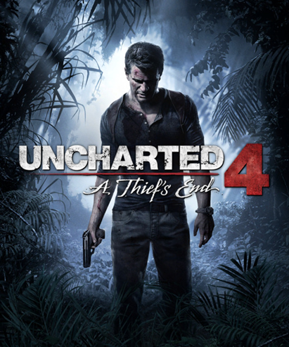

Uncharted 4: A Thief's End é um jogo de ação e aventura desenvolvido pela Naughty Dog. O jogo acompanha Nathan Drake, um caçador de tesouros aposentado que volta ao mundo das aventuras após o reaparecimento de seu irmão Sam, considerado desaparecido por muitos anos. Juntos, eles partem em busca do lendário tesouro do pirata Henry Avery, enfrentando mercenários perigosos e diversos desafios ao redor do mundo. O gameplay mistura exploração, escaladas, combate armado, furtividade e resolução de quebra-cabeças. O jogo também apresenta cenários extremamente detalhados e cinematográficos, tornando a experiência muito imersiva. Nathan possui movimentos mais fluidos, podendo usar cordas para atravessar áreas e criar novas estratégias durante os combates. A narrativa é um dos grandes destaques, trazendo momentos emocionantes e aprofundando a relação entre os personagens principais. Os gráficos foram muito elogiados por sua qualidade visual e atenção aos detalhes. A trilha sonora acompanha bem os momentos de tensão e aventura, ajudando na ambientação. Além disso, o jogo oferece um modo multiplayer online com diferentes modos competitivos. No geral, Uncharted 4 é considerado um dos melhores jogos de aventura da geração PlayStation 4.
14+ - recomendado para maiores de 14 anos
A história de Uncharted 4: A Thief's End começa alguns anos após Nathan Drake abandonar sua vida de caçador de tesouros. Levando uma vida mais tranquila, ele acredita que suas aventuras ficaram no passado. Porém, tudo muda quando Sam, seu irmão mais velho, reaparece inesperadamente pedindo ajuda para encontrar um tesouro lendário escondido por antigos piratas. Diante dessa situação, Nathan decide retornar ao mundo das expedições perigosas e parte em uma jornada por diversos lugares do mundo. Durante a aventura, os irmãos enfrentam mercenários armados, exploram ruínas antigas e procuram pistas escondidas que podem levá-los até a fortuna perdida de Henry Avery. Conforme a história avança, segredos do passado de Nathan começam a surgir, mostrando detalhes de sua infância e da relação com Sam. Além disso, o jogo explora os conflitos internos do protagonista, que precisa escolher entre sua vida atual e o desejo por aventura. A narrativa mistura ação intensa, momentos emocionantes e cenas cinematográficas muito bem produzidas. Os personagens possuem grande desenvolvimento ao longo da história, tornando a experiência mais envolvente. O jogo também apresenta reviravoltas importantes que mantêm o jogador interessado até o final da jornada.
10 de maio de 2016
Entre R$80 e R$250 (dependendo da edição e plataforma)
Aproximadamente 55 GB